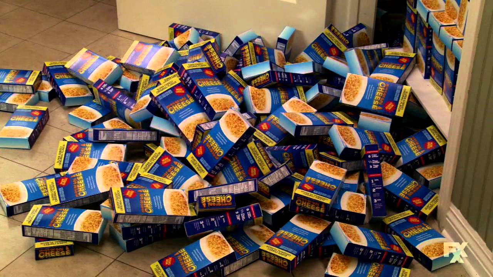

Mac and Cheese

Ingredients
- 1 cup milk
- 1 1/2 cups water
- 1/2 cup panko breadcrumbs
- 3-4 tbsp butter
- 8 ounces pastsa
- 2 ounces romano cheese
- 4 ounces american cheddar
- cayanne pepper
Steps
- combine milk and water, bring to simmer
- in seperate pan, combine breadcrumbs and butter
- when milk simmers, add pasta
- toss golden brown breadcrumbs with 2 ounces grated cheese
- when liquid is absorbed add american cheese and stir
- add shake of cayanne
- top with breadcrumbs after plating in bowl and serve!
Return to main page